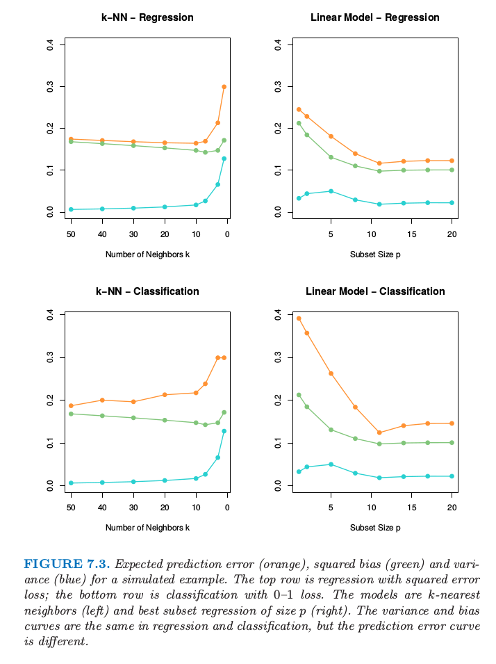

7.3 偏差-方差分解¶
7.3.1 一般性讨论¶
和第 2 章一样，如果假设 \(Y=f(X)+\varepsilon\)，其中 \(\varepsilon\) 是均值为 0 ，方差为 \(\sigma_\varepsilon^2\) 的随机噪声，即 \(\mathbb{E}(\varepsilon)=0\)，并且 \(\mathbb{Var}(\epsilon)=\sigma_\varepsilon^2\) 。如果选择平方误差作为损失函数，则可以导出输入点 \(X=x_0\) 处的回归估计值 \(\hat f(X)\) 的平均预测误差如下：
式中：
第一项是系统误差项。该项是目标自身在其真实均值 \(f(x_0)\) 处的方差，通常由观测误差引起。理论上无论对 \(f(x_0)\) 的估计有多好，该项都不可避免，除非假设 \(\sigma_\varepsilon^2=0\)。
第二项是平方偏差项，是
估计的均值与真实的均值之间的偏差量（可形象理解为估计值与真值之间的距离）；第三项是方差项，是估计值 \(\hat f(x_0)\) 在其自身均值处的平方误差平均值（可形象理解为估计值在均值点附近的散布范围或宽度）。
一般而言，建立的模型 \(\hat f\) 越复杂，偏差项越低，但是方差项越大。
公式推导
(7.9) 其实暗含 \(\mathbb{E} f(x_0)\mathbb{E}\hat f(x_0)=\mathbb{E}(f(x_0)\hat f(x_0))\)，这显然成立，因为我们训练 \(\hat f\) 时，完全不知道真实的 \(f\)，故它们独立。
直接根据均方误差分解 (3.20)：
或者更具体地：
7.3.2 \(k\)-近邻方法的误差分解¶
对于 \(k\)-近邻拟合，上述表达式有更简单的形式：
这里为了简单我们假设训练输入 \(x_i\) 为固定的，则随机性来自 \(y_i\)。邻居的个数 \(k\) 与模型复杂度负相关。对于较小的 \(k\)，估计出的 \(\hat f_k(x)\) 可以对潜在的函数 \(f(x)\) 可能有更好的适应性。当 \(k\) 增大，偏差一般会增大，但方差会降低。
7.3.3 简单线性回归估计的误差分解¶
对于线性回归模型 \(\hat f_p(x)=x^T\hat\beta\)，其中 \(p\) 个输入变量对应的参数向量 \(\beta\) 是通过最小二乘拟合的，有：
这里 \(\mathbf h(x_0)=\mathbf{X}(\mathbf{X}^T\mathbf{X})^{-1}x_0\)，是得到拟合 \(\hat f_p(x_0)=x_0^T(\mathbf{X}^T\mathbf{X})^{-1}\mathbf{X}^Ty\) 的 \(N\) 维线性权重，因此 \(\mathbb{Var}[\hat f_p(x_0)]=\Vert \mathbf h(x_0)\Vert^2\sigma_\varepsilon^2\)。尽管方差随着 \(x_0\) 变化，但它的平均（当 \(x_0\) 取遍样本值 \(x_i\)）为 \((p/N)\sigma^2_\varepsilon\)，
公式推导
记 \(\mathbf{X}=[x_1',x_2',\ldots,x_N']'\)，则
则方差的平均为 \((p/N)\sigma_\varepsilon^2\)。
因此有:
这称作 样本内 (in-sample) 误差。这里模型复杂度直接与参数个数 \(p\) 有关。
7.3.4 岭回归估计的误差分解¶
对于岭回归估计 \(\hat f_\alpha(x_0)\) 的测试误差 \(\mathbb{Err}(x_0)\) 与 式（ 7.11 ） 式相同，除了方差项的线性系数不一样：\(\mathbf h(x_0)=\mathbf X(\mathbf {X^TX}+\alpha\mathbf I)^Tx_0\)。偏差项也会不一样。
对于线性模型族比如岭回归，我们可以更精细地分解偏差。令 \(\beta_*\) 为 \(f\) 的最优线性估计的参数：
这里期望是对输入变量 \(X\) 的分布取的。接着我们可以将 偏差平方的平均 (average squared bias) 写成
右侧的第一项是 模型偏差 (model bias) 平方的平均，它是最优线性近似和真实函数之间的误差。第二项是 估计偏差 (estimation bias) 平方的平均，它是估计的平均值 \(\mathbb{E}(x_0^T\hat\beta)\) 与最优线性近似之间的误差。
对于通过普通最小二乘拟合的线性模型，估计量的偏差为 0。对于约束的拟合，比如岭回归，它是正的，而且我们用减小方差的好处进行交易。模型偏差只可能通过将线性模型类扩大为更广的模型类才能降低，或者通过在模型中加入变量的交叉项以及变换项（通过变量的变换得到的）来降低。
7.4.5 可视化理解偏差与方差之间的权衡¶
图 7.2 显示了偏差和方差之间的权衡的原理图。在线性模型的情形下，模型空间是根据 \(p\) 个输入变量进行线性预测的集合，标为 “closest fit” 的黑点是 \(x^T\beta_*\)。蓝色阴影部分区域表示训练样本与真实值（图中的 truth）之间的误差 \(\sigma_\varepsilon\)。
图 7.2. 偏差和方差行为的原理图。
模型空间是模型的所有可能的预测的集合，“closest fit”用黑点标出。图中显示了偏离真实值的模型偏差，以及用圆心在标记为“closest fit in population”的黑点处的黄色大圆来表示方差。图中也显示了收缩或者正则化的拟合，它们有额外的估计偏差，但是因为方差的减小导致了更小的预测误差。
图中也显示了最小二乘的方差，用圆心在标记为“closest fit in population”的黑点处的黄色大圆来表示。现在如果我们用更少的预测变量来拟合模型，或者通过将它们向 0 收缩来正则化系数，我们会得到图中的 “shrunken fit”。这个拟合有额外的估计偏差，因为它不是模型空间的最近拟合 (closest fit)。另一方面，它有更小的方差。如果方差的减少大于（平方）偏差的增大，则是值得的。
7.4.6 方差-偏差之间的权衡的案例¶

图 7.3 某模拟例子的预测误差的期望（橘黄色），平方偏差（绿色）以及方差（蓝色）。
上面两张图为平方误差损失的回归；下面两张图为 0-1 损失的分类。模型是 \(k\) 最近邻（左边）以及大小为\(p\)的最优子集回归（右）。在回归和分类中的方差和偏差曲线是一样的，但是预测误差曲线是不同的。
图 7.3 显示了两个模拟例子的偏差-方差之间的权衡。有 80 个观测，20 个预测变量，在超立方体 \([0,1]^{20}\) 中均匀分布。这些情形如下：
左图： 若 \(X_1\le 1/2\)，\(Y=0\)，且若 \(X_1>1/2\)，\(Y=1\)，而且应用 \(k\)-最近邻模型。
右图： 若 \(\sum_{j=1}^{10}X_j>5\)，\(Y=1\)，否则 \(Y=0\)，且采用大小为 \(p\) 的最优子集回归。
上面一行的图是平方误差损失的回归；下面一行的图是 0-1 损失的分类。图中显示了预测误差（红色）、平方误差（绿色）和方差（蓝色），都是用较大的测试样本计算的。
在回归问题中，偏差和方差相加得到预测误差曲线，对于 \(k\) 最近邻在 \(k=5\) 处有最小值，对于线性模型 \(p\ge 10\) 时有最小值。对于分类损失（下图），可以看到一些有趣的现象。偏差和方差曲线与上面的图象相同，而且预测误差指的是误分类比率。我们看到预测误差不再是偏差与方差的和。对于 \(k\) 最近邻分类器，当邻居个数增长到 20，预测误差降低或者保持不变，尽管偏差仍在增大。对于线性模型分类器，最小值和回归一样出现在 \(p\ge 10\)，但是在 \(p=1\) 处模型的改进很显著。我们可以看到偏差和方差是相互影响来确定预测误差。
为什么会这样？
第一个现象可以很简单的解释。假设在一个给定的输入点，类别 1 的真实概率为 0.9，而我们估计出的期望值为 0.6。则偏差平方——\((0.6-0.9)^2\)——是相当大的，但是预测误差为 0，因为我们作出了正确的判断。换句话说，使我们处于判别边界正确一侧的估计误差没有受到影响。练习 7.2 从分析角度论证这个现象，并且展示了偏差与方差之间的相互影响。
整体情况是偏差与方差之间的权衡在 0-1 损失 与 平方误差损失 时表现不一样。反过来则意味着：调整参数的最优选择在两种设定下可能有着本质的不同。正如后面章节描述的那样，我们应该将调整参数的选择建立在对预测误差的估计之上。